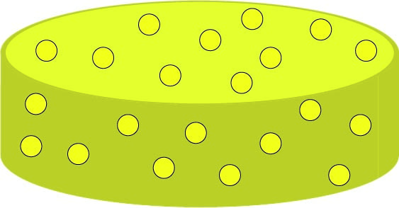
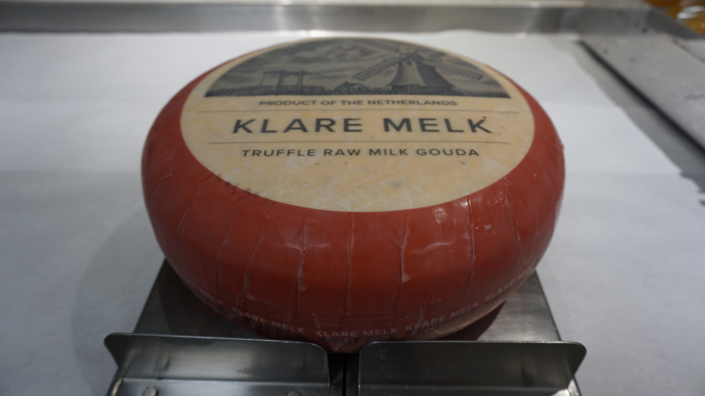
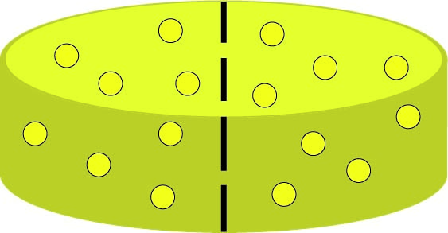
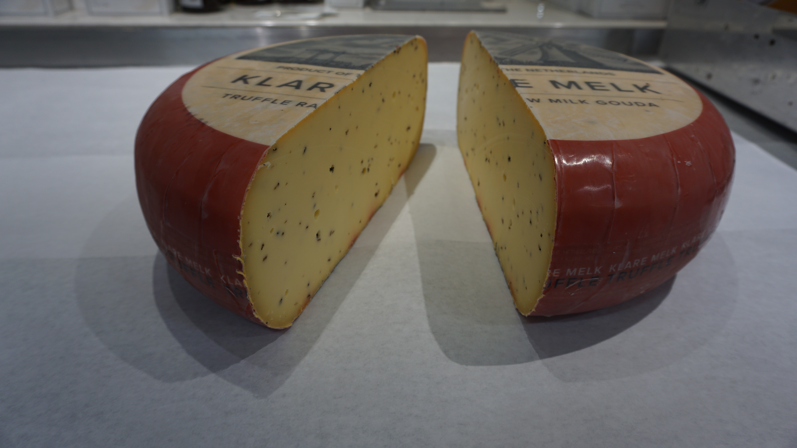

How To Cut Cheese Like A Pro!
Created By: Bonnie Katz
I created this webpage to show people how to properly breakdown a wheel of cheese. While each cheese has specific guidelines on how they should be cut I am going to show you specifically how to breakdown a large wheel of Gouda.
We start with a full wheel of uncut cheese
 Then we simply cut the full wheel in half
 Credits: Original Illustration and Photo By Katz, Bonnie.
Step 2